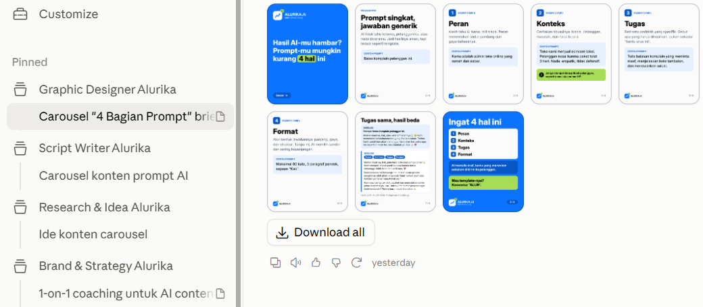

Dalam satu sesi pendampingan, kamu menyusun Brand Bible, 4 karyawan AI, dan alur kerja konten yang bisa langsung kamu jalankan sendiri setelahnya.
Sistem ini dibangun dengan akun AI gratis dan diterapkan di akun @helloirsan, @shalihcircle, dan @alurika.id.
Biasanya karena AI-nya belum pernah kamu briefing.
Setiap mau posting, kamu mulai lagi dari halaman kosong.
AI tidak tahu siapa audiensmu, bagaimana gayamu, dan apa yang tidak boleh ia katakan.
Tanpa alur kerja, konten bergantung pada mood dan waktu luang.
Solusinya bukan tools baru. Solusinya memperlakukan AI seperti karyawan: diberi konteks, peran, dan standar kerja yang jelas.
Bukan sekadar kumpulan prompt. Ini sistem yang bisa kamu pakai ulang setiap minggu.
Cara menulis brief ke AI supaya hasil pertama sudah mendekati yang kamu mau, lengkap dengan contoh sebelum dan sesudah.
Dokumen acuan tentang bisnismu: audiens, suara, pilar konten, dan batasan. Dokumen inilah yang membuat AI terasa seperti kamu.
Brand & Strategy, Research & Ideas, Script Writer, dan Graphic Designer. Masing-masing punya peran dan standar kerja sendiri.
Instruksi siap tempel untuk tiap karyawan, jadi kamu tidak perlu menjelaskan ulang bisnismu setiap hari.
Urutan kerja dari riset sampai review manual, supaya membuat konten jadi rutinitas, bukan improvisasi.
Satu tim, empat peran, satu Brand Bible yang sama.
Menjaga arah: positioning, pilar konten, dan kalender konten.
Mencari tren dan menyusun bank ide sesuai audiens dan pilarmu.
Menulis naskah Reels, carousel, dan caption dengan suaramu.
Mengubah naskah menjadi visual sesuai identitas brand-mu.
Review akhir tetap di tanganmu. AI bisa keliru, jadi fakta, nada, dan klaim selalu kamu cek sebelum tayang.
Alur kerja ini sudah diterapkan di akun @helloirsan, @shalihcircle, dan @alurika.id. Saat konsultasi, kamu bisa melihat langsung Brand Bible, contoh brief, dan hasil kontennya.
Kami tidak menjanjikan angka followers atau penghasilan. Yang kamu dapat adalah sistem kerja. Hasilnya bergantung pada konsistensi dan kualitas input-mu.

Irsan membantu orang memahami dan memakai AI untuk kerja, dengan urutan yang jelas: prompting, workflow, lalu implementasi. Tujuannya sederhana: belajar AI sampai benar-benar bisa dipakai.
Durasi sesi: 120 menit. Kamu datang dengan bahan, kami membangun bersama.
Audiens, suara, pilar konten, dan batasan, ditulis dengan bahasamu sendiri.
Pasang peran, prompt yang sudah dioptimasi, dan custom instruction untuk tiap karyawan.
Satu ide berjalan dari riset, naskah, sampai visual, di depan matamu.
Alur satu halaman dan semua instruksi siap tempel, supaya kamu bisa jalan sendiri.
Kamu pemilik bisnis atau pembangun personal branding yang ingin rutin posting di Instagram, tapi kekurangan waktu atau ide.
Kamu mau mengerti sistemnya, bukan hanya menerima hasil.
Kamu siap meluangkan waktu menyiapkan informasi tentang bisnismu.
Kamu mencari konten jadi tanpa terlibat sama sekali.
Kamu mengharapkan jaminan followers atau penghasilan.
Kamu belum punya gambaran bisnis atau topik konten. Mulai dari webinar ALURIKA.AI mungkin lebih pas.
Sistem ini dirancang agar bisa dibangun dengan akun gratis. Batasnya: jatah pemakaian harian dan fitur tiap tools bisa berbeda dan berubah dari waktu ke waktu, jadi di sesi kita cek bersama apa yang bisa dipakai di akunmu.
Tidak ada yang bisa menjamin itu. Sesi ini memberimu sistem untuk membuat konten lebih konsisten dan terarah. Pertumbuhan bergantung pada konsistensi, kualitas input, dan reviewmu.
Tidak. Kamu cukup bisa menjelaskan bisnismu dengan kata-katamu sendiri.
Itu risiko nyata kalau AI tidak diberi konteks. Karena itu Brand Bible dan review manual adalah inti paket ini.
Itu tujuannya. Kamu pulang dengan alur kerja satu halaman dan instruksi siap tempel untuk tiap karyawan.
Kirim pesan WhatsApp ke 0851-7966-2429 dengan kata kunciCOACHING. Kami balas dengan beberapa pertanyaan singkat untuk melihat apakah sesi ini cocok untukmu.
Chat WhatsApp: COACHING